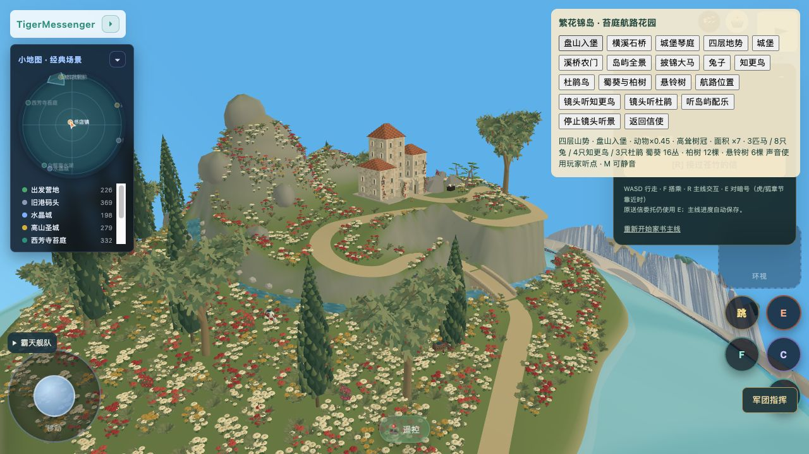
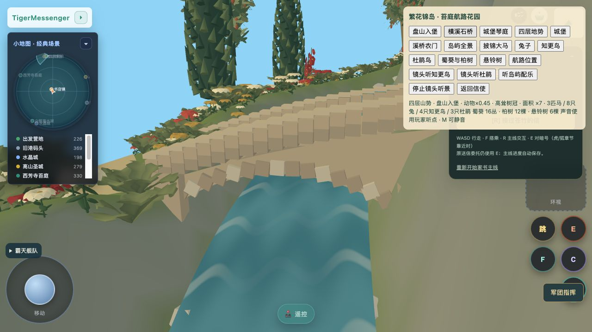
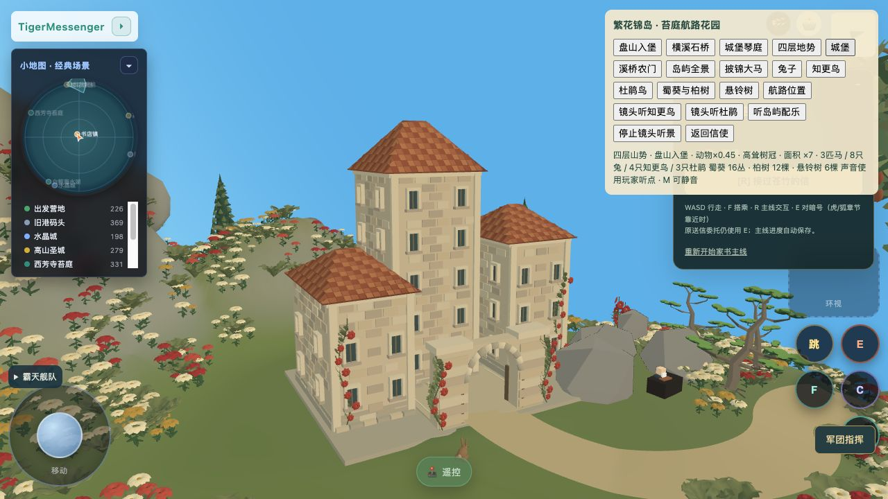
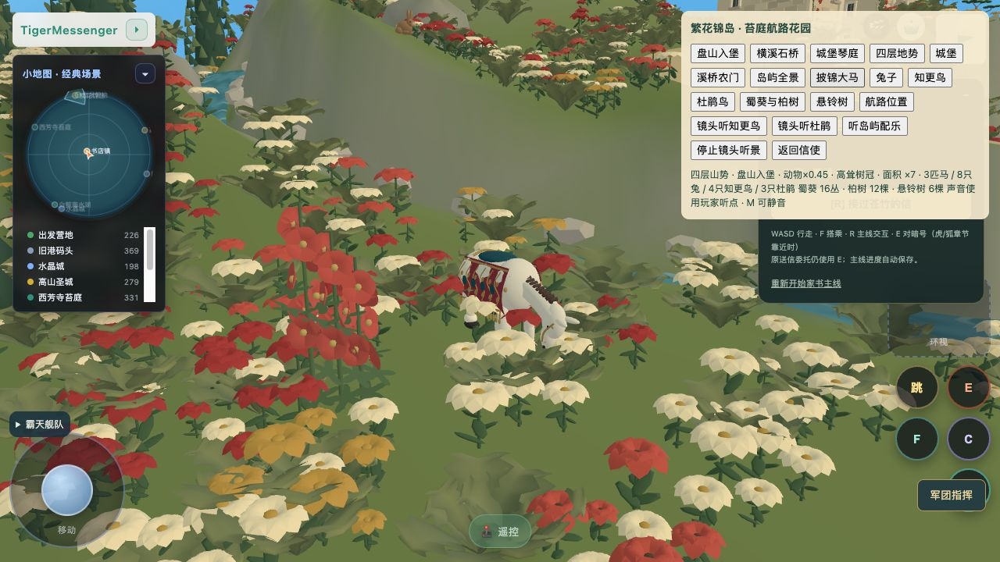

最新：上山曲径 r25 实景
莫里斯岛 · 盘山入堡
花草坪 → 横溪石桥 → 农门 → 两次盘山回转 → 城堡。树群留出桥景、转弯与城门视线，小尺度动物分布在花坪和缓坡。
进入正式游戏 → 🤖 →「繁花锦岛 · 披锦大马」→「盘山入堡 / 横溪石桥」。
正式场景 · 盘山与四层地势

当前生产版本 r24 真实画面，非目标图、非离线组件。道路约156米、宽3.2米，已做真实坡肩及三角面承托检查；完整步行尚未验收。正式场景 · 石桥横跨溪流


Oskar方法顾问城堡：砌石、厚窗、瓦面、入口与琴庭。
杯状花、圆瓣花、卷叶与小尺度生物。原创配乐 · 织锦花园
保留已接入的原创钢琴/弦乐/笛声合成配乐；游戏中渐入渐出、M静音，老人互动/战斗/电车音乐优先。目标V3 · 本轮实施与验证 · 状态与缺项 · 上轮记录